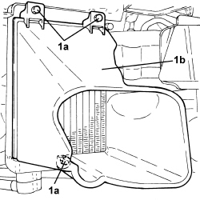

1084C40 AIR DUCT FOR ENGINE OIL COOLING RADIATOR - R.R.
- Path
- Procedures > 10 ENGINE > 1084 ENGINE LUBRICATION > 1084C ENGINE OIL COOLING CIRCUIT > 1084C40 AIR DUCT FOR ENGINE OIL COOLING RADIATOR - R.R.
- Kind
- repair procedure (removal / refitting; the operation number is the code)
- Applies to
- engines: 2.4 JTD 20v; all production periods
- Interactive page
- https://sloeber94.github.io/elrnDB-fCrm/en/#/194004000
Applies to: engines: 2.4 JTD 20v; all production periods
 Removing
Removing
 Refitting
Refitting- Position the vehicle on a lift.
- Make sure that the ignition key is in the OFF position, then disconnect the battery terminal (-).
Op. 7040D30 ENGINE BAY FRONT BEAM COVER - R R
Op. 7055A43 CENTRE FRONT GRILLE - R.R.
Op. 7055B90 LEFT FRONT WHEEL ARCH LINER - R.R.
Op. 7055B91 RIGHT FRONT WHEEL ARCH LINER - R.R.
1. Undo the bolts (1a) and remove the engine oil cooling radiator air duct (1b).

Applies to: engines: 2.4 JTD 20v; all production periods
Refitting
Removing- Fit the engine oil cooling radiator air duct in place and secure it using the bolts.
Op. 7055B91 RIGHT FRONT WHEEL ARCH LINER - R.R.
Op. 7055B90 LEFT FRONT WHEEL ARCH LINER - R.R.
Op. 7055A43 CENTRE FRONT GRILLE - R.R.
Op. 7040D30 ENGINE BAY FRONT BEAM COVER - R R
- Connect the negative battery terminal.
- Remove the vehicle from the lift.
Topics linked from this page (5)
- 7040D30 ENGINE BAY FRONT BEAM COVER - R R
- 7055A43 CENTRE FRONT GRILLE - R.R.
- 7055B90 LEFT FRONT WHEEL ARCH LINER - R.R.
- 7055B91 RIGHT FRONT WHEEL ARCH LINER - R.R.
- 7210E10 R.R. FRONT BUMPER